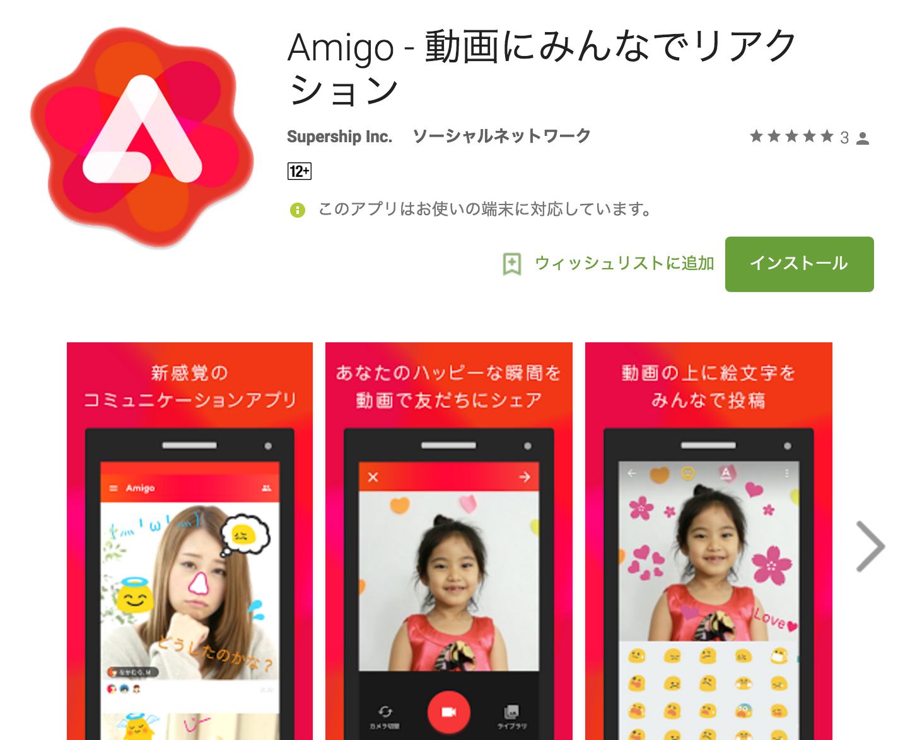
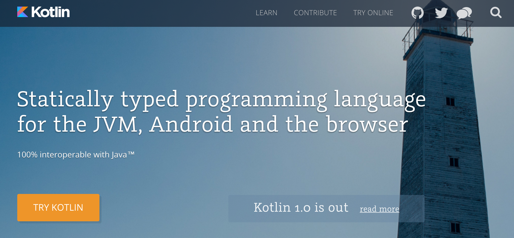
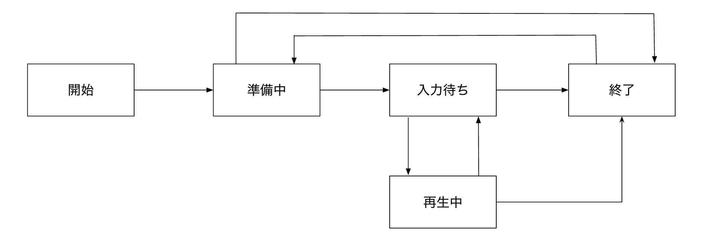
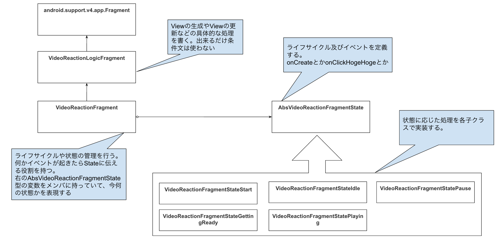

2016/05/12 松下 嶺
アジェンダ
- 自己紹介
- Amigoの開発体制とか採用している技術について
- Stateを意識した設計
- Amigoの開発体制とか採用している技術について
- Stateを意識した設計
Amigoの開発体制とか採用している技術について
Amigoってなに？？
現実を超えるコミュニケーションを実現するアプリ

Android側の体制
- 動画投稿まわりの機能を担当 * 1 ← t-kashima
- 動画の加工まわりの機能を担当 * 1 ← 僕
- 動画の加工まわりの機能を担当 * 1 ← 僕
Android開発で採用している技術
- Kotlinで実装。今年の2月に 1.0 になったタイミングで採用を決定。
- Javaからの移行を進めつつアプリの開発を進める。いまのとこ75%くらい。
- モバイルのDBにはRealmを採用。
- Javaからの移行を進めつつアプリの開発を進める。いまのとこ75%くらい。
- モバイルのDBにはRealmを採用。

本題: Stateを意識した設計
Amigoの動画（以下、キャンバス）の編集画面はイベントが多い
- - キャンバスにリアクションを載せる
- - リアクションを追加された順に再生する
- - 特定のユーザーのリアクションを強調表示する
- - メッセージを送信する
- - リアクションとメッセージの履歴を表示する
- - バックグラウンドのタスクからリアクションの更新を受け取って表示する
- etc ...
一つのVCでこれを全部管理しようとするとVCは爆発する
例えばリアクションはバックグラウンドで同期する仕組みが動いているので、
初期データのローディング中やリアクション再生中などは画面に追加描画しない対応が必要。
ここで isほげほげ とか状態を表すフラグをメンバ変数に複数個作った日にはメンテできる気がしないし、後からの機能追加のコストもやばい
ここで isほげほげ とか状態を表すフラグをメンバ変数に複数個作った日にはメンテできる気がしないし、後からの機能追加のコストもやばい
状態遷移図とStateパターンを使った設計
状態遷移図を書いてStateの変化を整理してみる

状態遷移図をStateパターンを使ってコードに落とし込む

例えば入力待ちの状態のイベントの実装
object VideoReactionFragmentStateIdle : AbsVideoReactionFragmentState() {
override fun onConditionCanvasUpdatedEvent(fragment: VideoReactionFragment, event: ConditionCanvasUpdatedEvent) {
super.onConditionCanvasUpdatedEvent(fragment, event)
if (event.canvasEntity.id == fragment.canvasId) {
fragment.refreshReaction()
}
}
override fun onReactionReplayButtonClicked(fragment: VideoReactionFragment) {
super.onReactionReplayButtonClicked(fragment)
fragment.next(VideoReactionFragmentStatePlaying)
}
}
例えば再生中の状態のイベントの実装
object VideoReactionFragmentStatePlaying : AbsVideoReactionFragmentState() {
override fun entry(fragment: VideoReactionFragment) {
super.entry(fragment)
fragment.hideReactionButtons()
fragment.startReplayReaction()
}
override fun exit(fragment: VideoReactionFragment) {
super.exit(fragment)
fragment.stopReplayReaction()
fragment.refreshReaction()
fragment.showReactionButtons()
}
override fun onReactionReplayFinished(fragment: VideoReactionFragment, event: ReactionReplayFinishedEvent) {
super.onReactionReplayFinished(fragment, event)
fragment.next(VideoReactionFragmentStateIdle)
}
}
状態遷移図とStateパターンをアプリの開発に使うメリットとデメリット
- - 特定の状態の時に実行するべき処理と、実行するべきではない処理が明確に区別できる
- - ユーザーの操作やイベントによってどの状態に移るかがわかりやすい
- - 機能の追加が（比較的）容易
- - コード量は増えるので使いどころは見極めが必要
まとめ
- - アプリ開発では状態を意識することが大事
- - 複雑な操作と状態が要求される画面では状態遷移図を書いてStateパターンを使った実装に落とし込むとメンテが楽になる
- - 設計の考え方自体は昔からあるOOPで大事な"抽象化"と"移譲"を意識している。新しい技術だけでなく古典的な思想も学ぶと実装の幅が広がる
- - こんな感じで新規サービス開発室ではAmigoの開発をいい感じにがんばってます！
ご清聴ありがとうございました